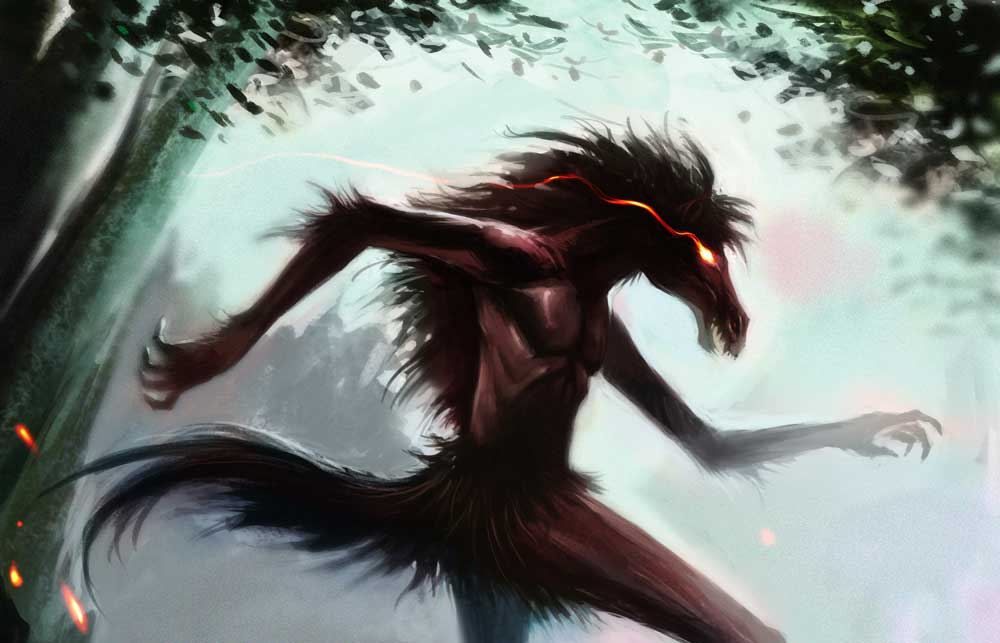

Tikbalang

The Tikbalang is one of the most well-known and distinctive creatures in Filipino folklore. It is a mythical creature that embodies the wildness and mystery of the forests, mountains, and rural areas of the Philippines. Often described as a fearsome, half-human, half-horse being, the Tikbalang is a central figure in traditional Filipino mythology, and it continues to be a subject of fascination in modern pop culture.
Appearance
The Tikbalang is typically depicted as having the body of a man or a humanoid figure, but with the head, legs, and hooves of a horse. This hybrid form gives the Tikbalang a terrifying and unnatural appearance. It is described as a tall, thin, and lanky figure, often with long, wild hair and glowing eyes that reflect a sense of mystery and danger.
-
Horse-like Features: The most striking feature of the Tikbalang is its horse-like head, with large, sharp eyes and long, flowing mane. The creature’s legs are also described as resembling those of a horse, with hooves instead of human feet, adding to its intimidating presence.
-
Human-like Body: From the waist up, the Tikbalang has a human-like torso, often described as a very tall, gaunt, and muscular figure. The Tikbalang’s appearance is a grotesque combination of man and beast, which reinforces its status as a supernatural creature with the ability to straddle both human and animal worlds.
-
Dark Cloak or Mysterious Aura: In some versions of the legend, the Tikbalang is said to wear a dark cloak or a tattered garment to conceal its monstrous appearance, though this is not always the case. Its overall presence is often accompanied by a sense of foreboding, and it is said to have a mischievous or malicious aura.
Behavior and Abilities
The Tikbalang is known for its mischievous nature and supernatural powers, and it plays a key role in Filipino mythology as both a trickster and a guardian of the forests and mountains. Its behavior can be both harmful and harmless, depending on the context and the version of the myth.
-
Trickster and Misdirection: One of the Tikbalang’s most famous abilities is its power to confuse and disorient travelers. The creature is said to have the ability to lead people astray, causing them to wander aimlessly in forests or mountains for hours, days, or even longer. It can manipulate time and space, making travelers believe they are going in one direction when they are actually going in circles or back to where they started.
-
Getting Lost: People who encounter the Tikbalang may find themselves lost even if they know the area well. It’s believed that the creature uses its power to alter their sense of direction, making them walk in circles until they eventually become exhausted, frightened, or disoriented. In some stories, the Tikbalang will only stop tormenting the victim once they confess that they were tricked or acknowledge the creature’s superior power.
-
Guardianship of the Forest: In some versions of the myth, the Tikbalang is considered a guardian or protector of the forests and mountains, often living in isolated, remote areas. As such, it may act aggressively toward humans who venture too far into its territory. In these stories, the Tikbalang may punish those who disrespect nature or trespass into sacred spaces, either by causing them to get lost or by physically intimidating them.
-
Telepathic Communication: In some myths, the Tikbalang is said to communicate with humans telepathically or through dreams. This ability allows it to plant thoughts or ideas in a person’s mind, leading them in specific directions or influencing their actions. The Tikbalang may also use this power to frighten or threaten individuals, often by whispering warnings or curses.
-
Shape-shifting and Invisibility: The Tikbalang is sometimes said to have the ability to shape-shift or become invisible. It can change its appearance, often taking on the guise of a person or a different animal, in order to deceive travelers. This shape-shifting ability makes the Tikbalang even more elusive and dangerous, as it can trick people into thinking they are encountering a harmless stranger, only for them to realize too late that they are in the presence of a supernatural being.
-
Speed and Strength: As a creature with the body of a horse, the Tikbalang possesses great speed and strength. It can outrun humans with ease, and its powerful legs allow it to jump over large obstacles, such as fences or streams. The Tikbalang’s speed and agility also make it difficult to catch or escape from, adding to its fearsome reputation.
Vulnerabilities and Weaknesses
Despite its powerful abilities, the Tikbalang is not invincible. There are several ways to ward off or protect oneself from the creature’s tricks and power.
-
Turning Your Shirt Inside Out: One of the most well-known ways to protect yourself from a Tikbalang is by turning your shirt (or any article of clothing) inside out. According to folklore, the Tikbalang finds this act confusing and will lose its ability to disorient or mislead the traveler. This simple gesture is often seen as a way to outwit the creature and break its spell.
-
Respecting Nature: In some versions of the legend, the Tikbalang is said to respect those who show proper reverence for nature. Travelers who are respectful and conscious of the environment may be less likely to incur the creature’s wrath. The Tikbalang is believed to punish those who disobey the laws of nature or who enter sacred spaces with malicious intent.
-
Shouting for Help: In certain stories, calling out for help or invoking the name of a higher power can cause the Tikbalang to retreat or stop its tricks. Some versions of the myth suggest that seeking assistance from others, especially those familiar with the creature, can provide protection from the Tikbalang’s misdirection.
-
Avoiding the Creature’s Gaze: In some variations of the Tikbalang myth, it is said that the creature has a hypnotic gaze that can render its victims powerless. Looking directly into its eyes may cause the person to become entranced or paralyzed, making them an easy target for further trickery. Avoiding eye contact with the creature is considered an important protective measure.
Culture Influence
Cultural Influence
The Tikbalang’s origins are thought to be pre-colonial, with roots in ancient Filipino beliefs and animism. It likely draws from regional stories about supernatural horse-like beings, possibly influenced by native tales from Southeast Asia or neighboring countries. In pre-colonial Filipino society, the Tikbalang was believed to inhabit remote areas and was often regarded as a trickster or a guardian spirit of the wilderness.
The Tikbalang is one of the most iconic creatures in Filipino folklore, and its stories are widespread across the various ethnic groups in the Philippines, including the Tagalog, Visayan, Ilocano, and Bicolano peoples. It is often used in Filipino literature, theater, and film as a symbol of the unknown, the untamed, and the mysterious forces of nature.
The creature’s trickster qualities have made it a fascinating subject for storytelling. Tikbalang tales often explore themes of cunning, survival, and the complex relationship between humans and nature. The creature’s role as a guardian of the forests also highlights the Filipino value of respecting and protecting the environment.